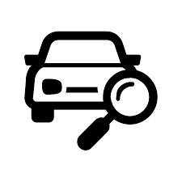

Routine inspections are very important when it comes to taking care of your car. We recommend that you schedule a routine
inspection every 3-6 months. Inspections are important because it helps us diagnose what condition your car is in. If you suspect
something is wrong with your car and you want to get it looked at, please schedule an appointment with us for an inspection. We
would be happy to help you!
What does an inspection include?
- Tires and suspension components
- Braking system parts and lines
- Fuel lines, gas tank, and exhaust system
- Electrical components, including the stereo, wiring, battery, charging system, and internal and external lights
- Engine components, such as drive belts, cooling system and fluids
- Air conditioner and heater
- The car's body, glass and frame, as well as the condition of the interior
Types of Issues
| Problem |
Signs |
| Wheel alignment and suspension issues |
If the vehicle pulls to one side of the road, or if it wanders back and forth when it should be going straight,
that’s a problem. It can be caused by improper alignment settings or worn suspension components. If it makes a crashing
sound when you hit a bump or pothole, the shock absorbers could need replacing.
|
| Steering Issues |
These include excessive play in the wheel from worn steering components, or difficulty turning the wheel due
to problems with the power steering.
|
| Braking issues |
These can include vibration or shaking during braking, usually due to warped brake rotors. Having to apply excessive
force to the brake pedal usually indicates a problem with the brake assist system. Squealing or chirping may indicate
glazed rotors or other problems with brake components.
|
| Engine issues |
The engine should idle and accelerate smoothly, and run at a normal temperature without overheating. |
| Transmission issues |
Transmission can get expensive quickly, so the inspector will want to make sure it shifts smoothly and
shows no signs of slipping. If it’s a manual, the clutch should be in good condition.
|
| Noises |
Cars can make a whole range of noises, and they can come from a variety of sources and indicate many different
problems. Squeaks and rattles can be caused by loose or rubbing interior panels. Wind noises can be caused by
misaligned windows or worn seals. Clunks and rattling can indicate loose or broken vehicle component mounts,
among other things.
|